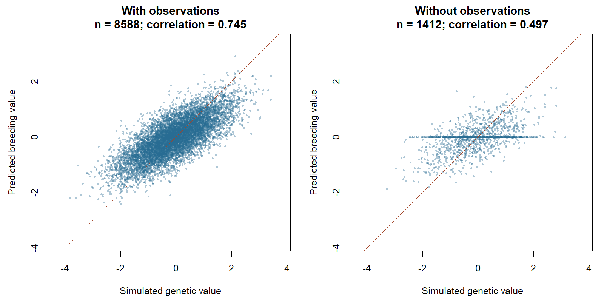
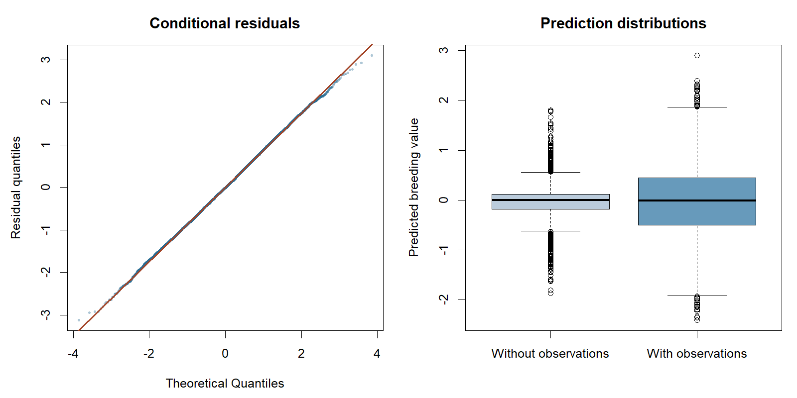

Pedigree analysis with R data frames
Start with two R data frames: pedigree contains IDs and parents; data contains responses, covariates and matching animal IDs. Specify effects with formulas, optionally add covariance components, then fit and inspect results. The examples share a 10,000-animal pedigree and cover single-trait, multitrait, longitudinal, repeatability, direct/maternal and structured-residual models.
The aim is to estimate genetic variation, predict animal effects and interpret the fit. Simulation also provides known genetic values for comparison, which are unavailable in ordinary field data.
You need a development installation of gsuite and gsim; see Downloads. No source checkout or private archive is needed. The website displays code without executing it. Copy the R blocks in order to run the examples locally.
Prepare ordinary data frames
For your own analysis, use your existing data frames (for example, from read.csv()). Pedigree columns are id, sire and dam; NA denotes an unknown parent. IDs are labels, not row numbers. Parents without phenotypes remain in the pedigree. Here gsim supplies a reproducible teaching example with 10,000 animals. To try a faster first run, change n_animals below to 200L; the data preparation and model-fitting workflow stay the same.
library(gsuite)
library(gsim)
n_animals <- 10000L
simulation <- gsim_pedigree(
n_animals = n_animals, seed = 101,
unphenotyped_probability = 0.15
)
pedigree <- data.frame(
id = simulation$pedigree$animal,
sire = simulation$pedigree$sire,
dam = simulation$pedigree$dam
)
head(pedigree)This helper attaches the simulated covariates to the observations. It is only data preparation for these examples; it is unnecessary when your data frame already contains these columns. Sex, cohort and herd are categorical here.
example_data <- function(view) {
data <- view$records
data$id <- data$animal
at <- match(data$id, simulation$pedigree$animal)
stopifnot(!anyNA(at))
data$sex <- factor(simulation$pedigree$sex[at])
data$cohort <- factor(simulation$pedigree$cohort[at])
groups <- max(2L, min(20L, as.integer(ceiling(nrow(pedigree) / 50))))
data$herd <- factor(1L +
(match(data$id, simulation$canonical_order) - 1L) %% groups)
data
}Single trait: begin with the short form
The model includes sex, cohort and herd as fixed effects, an additive genetic animal effect linked through the pedigree, and independent residual errors. Our question is: how much variation in BW is genetic after accounting for these fixed effects, and what are the breeding values of the pedigree animals? For these examples, explicitly select the sparse CHOLMOD solver with selected inversion, as used in the pedigree comparison with DMU. This requires a gsuite build with CHOLMOD support. These computational settings leave the statistical model unchanged and avoid the many solves required by coordinate-based exact trace calculations at this size.
fit_control <- list(linear_solver = "sparse_direct",
direct_backend = "cholmod", exact_trace_method = "selected_inverse")
single_view <- gsim_pedigree_records(simulation, model = "single",
residual_groups = 1L, seed = 201)
data <- example_data(single_view)
data$BW <- data$value
data <- data[c("id", "BW", "sex", "cohort", "herd")]
head(data)
# Pedigree size and observation count are different quantities.
c(pedigree_animals = nrow(pedigree),
observed_animals = length(unique(data$id)),
observations = nrow(data))
stopifnot(!anyNA(pedigree$id), !anyDuplicated(pedigree$id),
all(data$id %in% pedigree$id),
!anyNA(data[c("BW", "sex", "cohort", "herd")]))
fixed_design <- model.matrix(~ sex + cohort + herd, data)
stopifnot(qr(fixed_design)$rank == ncol(fixed_design))The default run has 10,000 pedigree animals and 8,588 observations on distinct animals; 1,412 animals have no observation. These introductory checks stop on missing values. They complement the pedigree constructor’s structural checks.
Fit and read the summary
single_fit <- gfit(
formula = BW ~ sex + cohort + herd + (1 | id),
data = data,
pedigree = pedigree,
task = "reml", control = fit_control
)
summary(single_fit)An excerpt from the recorded 10K summary is shown below. Current summaries also print the fixed-effect estimates, interpreted in the next section.
Pedigree single: reml (8588 observed scalar records)
Status: success
Optimizer converged: TRUE
Reason: score_stationary
$id
[1] 0.9331055
$residual
[1] 1.178816id is the additive genetic variance component and residual is the residual variance. The summary describes the model and numerical outcome; convergence alone does not establish that the model is scientifically appropriate.
No starting variances are required. For this model, gsuite uses half the fixed-effect residual variance for each of the genetic and residual starts. These are deterministic starting guesses, not fixed parameters or priors. REML then estimates the covariance parameters. Inspect both numerical status and optimizer convergence before using estimates or predictions:
single_diagnostics <- diagnostics(single_fit)
single_diagnostics$status
single_diagnostics$converged
single_diagnostics$initialization
stopifnot(isTRUE(single_diagnostics$status$ok),
isTRUE(single_diagnostics$converged))Interpret the estimated parameters
Extract the summary’s covariance components and calculate \(h^2 = \sigma_a^2 / (\sigma_a^2 + \sigma_e^2)\):
single_summary <- summary(single_fit)
genetic_variance <- as.numeric(single_summary$covariance$id)
residual_variance <- as.numeric(single_summary$covariance$residual)
parameter_table <- data.frame(
parameter = c("Genetic variance", "Residual variance", "Heritability"),
estimate = c(genetic_variance, residual_variance,
genetic_variance / (genetic_variance + residual_variance)))
parameter_table
fixed_effects <- data.frame(term = names(coef(single_fit)),
estimate = unname(coef(single_fit)))
fixed_effects| Parameter | Estimate in the default run |
|---|---|
| Genetic variance | 0.93311 |
| Residual variance | 1.17882 |
| Heritability | 0.44183 |
The fitted variance-parameter ratio is about 0.44. It is not the fraction of sample variation explained by predicted breeding values; pedigree diagonals can also differ with inbreeding. BW uses arbitrary simulated units here.
The fixed-effect table contains the intercept and contrasts for sex, cohort and herd. Reference levels are F, cohort 1 and herd 1. For example, the default run estimates an intercept of 1.92685 and a sexM contrast of -0.42362. These are conditional model estimates, not causal effects. The tables contain point estimates only; they do not establish significance or quantify uncertainty.
The first rows of the fixed-effect table are:
| Term | Estimate |
|---|---|
| Intercept | 1.92685 |
| sexM | -0.42362 |
| cohort2 | 0.01567 |
| cohort3 | -0.06153 |
| cohort4 | 0.06348 |
| cohort5 | 0.24329 |
Extract animal predictions and fitted observations
breeding_values <- gs_ranef(single_fit)$id
names(breeding_values)[names(breeding_values) == "BW"] <- "predicted"
breeding_values$observed <- breeding_values$id %in% data$id
head(breeding_values)
table(breeding_values$observed)
record_results <- data[single_fit$record_mapping$data_row, ]
record_results$fitted <- fitted(single_fit)
record_results$residual <- residuals(single_fit)
head(record_results)
stopifnot(isTRUE(all.equal(record_results$BW,
record_results$fitted + record_results$residual, tolerance = 1e-10)))There is one breeding-value prediction for every pedigree animal, including animals without their own observation. Relatives can provide information for these animals. Keep IDs with predictions when exporting or joining them to other data. Prediction-error variances and individual reliabilities were not requested in this fit.
For example, the prediction table begins as follows. These are the first pedigree rows, not the highest-ranked animals:
| Animal ID | Predicted breeding value | Has observation |
|---|---|---|
| A007644 | -0.03973 | Yes |
| A003808 | 0.30796 | Yes |
| A007626 | 0.18086 | Yes |
| A002923 | 0.58476 | Yes |
| A006819 | -0.85420 | Yes |
| A003571 | 0.00000 | No |
Compare predictions with simulated genetic values
Use the simulated animal genetic values, excluding fixed effects and residual noise. Match by ID because pedigree, records and truth can differ in row order. This is a descriptive comparison, not an exact pedigree-covariance recovery experiment; see Scope below.
truth <- single_view$truth$latent_animal_values
at <- match(breeding_values$id, rownames(truth))
stopifnot(!anyNA(at), !anyDuplicated(rownames(truth)), ncol(truth) == 1L)
breeding_values$simulated <- as.numeric(truth[at, 1L])
record_truth <- breeding_values$simulated[match(single_view$records$animal,
breeding_values$id)]
stopifnot(isTRUE(all.equal(record_truth,
unname(single_view$truth$genetic_record_values), tolerance = 1e-10)))
plot_breeding_values <- function() {
old <- par(mfrow = c(1, 2), mar = c(4.5, 4.5, 3, 1))
on.exit(par(old))
limits <- range(breeding_values[c("simulated", "predicted")])
for (observed in c(TRUE, FALSE)) {
values <- breeding_values[breeding_values$observed == observed, ]
r <- cor(values$simulated, values$predicted)
plot(values$simulated, values$predicted, pch = 16, cex = 0.45,
col = "#276b9260", xlim = limits, ylim = limits, asp = 1,
xlab = "Simulated genetic value", ylab = "Predicted breeding value",
main = sprintf("%s\nn = %d; correlation = %.3f",
if (observed) "With observations" else "Without observations",
nrow(values), r))
abline(a = 0, b = 1, lty = 2, col = "#a34427")
}
}
plot_breeding_values()
The correlation describes agreement with simulated genetic values across a group; it is not an individual animal’s reliability. Predictions are shrunk toward the population mean, especially when information is limited, so equality with the simulated value is not expected for each animal. An animal without informative observations connected through the pedigree can have a zero prediction. That does not mean its actual genetic value is zero.
Inspect two simple diagnostic plots
plot_single_diagnostics <- function() {
old <- par(mfrow = c(1, 2), mar = c(4.5, 4.5, 3, 1))
on.exit(par(old))
qqnorm(record_results$residual, pch = 16, cex = 0.45, col = "#276b9260",
main = "Conditional residuals", ylab = "Residual quantiles")
qqline(record_results$residual, col = "#a34427", lwd = 2)
boxplot(predicted ~ observed, data = breeding_values,
names = c("Without observations", "With observations"),
col = c("#bbccdc", "#679abb"), xlab = "", ylab = "Predicted breeding value",
main = "Prediction distributions")
}
plot_single_diagnostics()
The Q–Q plot helps identify unusual tails or outliers. Conditional residuals are affected by fitted animal effects, so this is an exploratory check. The boxplots show prediction spread, not prediction-error variance. Neither plot establishes predictive performance on new observations.
Save the results
A small report can combine the fit summary, parameter table, fixed-effect estimates and plots. Export labelled tables for use outside R:
results_dir <- file.path(tempdir(), "gsuite-single-trait")
dir.create(results_dir, recursive = TRUE, showWarnings = FALSE)
saveRDS(single_fit, file.path(results_dir, "fit.rds"))
write.csv(parameter_table, file.path(results_dir, "parameters.csv"), row.names = FALSE)
write.csv(fixed_effects, file.path(results_dir, "fixed-effects.csv"), row.names = FALSE)
write.csv(breeding_values, file.path(results_dir, "breeding-values.csv"), row.names = FALSE)
results_dirChoose a permanent results_dir to retain these files beyond this R session. The displayed results and figures use the default seeds, gsuite 0.42.0 and gsim 0.9.0. They are a recorded example, not live output from your local run.
fitted() and residuals() follow fit$record_mapping: observed data rows, grouped by trait for multitrait fits, with missing responses excluded. Further solver and likelihood diagnostics are in diagnostics(single_fit)$native.
The same model with explicit components
The explicit form separates the formula from the covariance model. variable binds a component to a formula grouping column, traits declares its covariance coordinates, and kernel supplies relationships among animal levels. Component names such as animal are your labels. Both forms below use the same adapter and initializers as the short form above.
PED <- gs_pedigree(pedigree, id = "id", sire = "sire", dam = "dam")
vcs <- list(
animal = gvc(variable = "id", traits = "BW", kernel = PED),
residual = gvc(variable = "residual", traits = "BW")
)
single_explicit <- gfit(
formula = BW ~ sex + cohort + herd + (1 | id),
data = data, vc = vcs, task = "reml", control = fit_control
)
head(gs_ranef(single_explicit)$animal)To provide starting values, use vc = c(id = 1, residual = 1) in the short form, or start = 1 in each explicit descriptor. Supplied values override the automatic starts. Explicit descriptors can omit starts independently.
For a fixed-covariance solve, both covariance values must be provided and will remain fixed. This is a separate analysis, not a substitute for a failed REML fit:
single_solve <- gfit(
formula = BW ~ sex + cohort + herd + (1 | id),
data = data, pedigree = pedigree,
vc = c(id = 1, residual = 1), task = "solve", control = fit_control
)
summary(single_solve)Two traits: keep one row per observation unit
The user data frame has response columns BW and GL. Here we reshape gsim’s long records into that wide format. Missing responses stay NA: a missing GL does not discard an observed BW. Covariates and IDs for an observed response must be present and valid. For repeated observations, each row represents a separate observation unit; its paired traits share residual covariance.
multi_view <- gsim_pedigree_records(simulation, model = "multitrait",
residual_groups = 1L, seed = 202)
long <- example_data(multi_view)
data_multi <- unique(long[c("observation_unit", "id", "sex", "cohort", "herd")])
for (trait in c("trait1", "trait2")) {
observed <- long[long$trait == trait, ]
response <- if (trait == "trait1") "BW" else "GL"
data_multi[[response]] <- observed$value[
match(data_multi$observation_unit, observed$observation_unit)]
}
head(data_multi)
multi_formulas <- list(
BW = BW ~ sex + cohort + herd + (1 | id),
GL = GL ~ sex + cohort + herd + (1 | id)
)
multi_fit <- gfit(
formula = multi_formulas,
data = data_multi, pedigree = pedigree, task = "reml", control = fit_control
)
summary(multi_fit)
head(gs_ranef(multi_fit)$id)
diagnostics(multi_fit)$convergedThe animal component is a trait covariance matrix G multiplied by pedigree relationships; the residual component is a trait covariance matrix R within observation units. Each trait has its own fixed effects. Automatic G and R starts are diagonal, splitting each trait’s fixed-effect residual variance equally; zero initial correlations do not constrain estimated correlations.
In the recorded run, the genetic variances for BW and GL were 1.02397 and 0.74453, with covariance 0.41652. Their genetic correlation is \(0.41652 / \sqrt{1.02397 \times 0.74453} = 0.47704\). This describes the association between the two genetic effects, not the correlation between observed phenotypes. Residual variances were 0.58931 and 0.37586, with covariance 0.15879 within observation units. Use summary(multi_fit)$covariance to inspect these matrices and cov2cor(summary(multi_fit)$covariance$id) to obtain genetic correlations. The prediction table has one row per pedigree animal and one column per trait. Check both diagnostics(multi_fit)$status$ok and convergence before interpreting these estimates; point estimates alone do not quantify uncertainty.
For explicit components use the same descriptors, now with both trait names:
multi_vcs <- list(
animal = gvc("id", traits = c("BW", "GL"), kernel = PED),
residual = gvc("residual", traits = c("BW", "GL"))
)
multi_explicit <- gfit(formula = multi_formulas, data = data_multi,
vc = multi_vcs, task = "reml", control = fit_control)To supply G and R, use vc = list(id = G, residual = R) or start = G and start = R on the explicit components. Matrices must be positive definite; named rows and columns must match c("BW", "GL") in that order. With task = "solve", both matrices are required and remain fixed.
Longitudinal data: genetic random regression
Keep one row per measurement, with repeated IDs. In this example genetic effects vary over time through an intercept and a linear basis time_basis = 2 * time - 1, matching the existing simulation example. The fixed time trend is included explicitly in the fixed part of the formula.
longitudinal_view <- gsim_pedigree_records(simulation, model = "longitudinal",
random_regression_rank = 2L, residual_groups = 1L,
minimum_records = 2L, maximum_records = 4L, seed = 203)
data_long <- example_data(longitudinal_view)
data_long$BW <- data_long$value
data_long$time_basis <- 2 * data_long$time - 1
data_long <- data_long[c("id", "BW", "sex", "cohort", "herd", "time", "time_basis")]
head(data_long)
long_formula <- BW ~ sex + cohort + herd + time_basis + (1 + time_basis | id)
long_fit <- gfit(formula = long_formula, data = data_long,
pedigree = pedigree, task = "reml", control = fit_control)
summary(long_fit)
head(gs_ranef(long_fit)$id)
diagnostics(long_fit)$converged
long_vcs <- list(
animal = gvc("id", traits = "BW", kernel = PED),
residual = gvc("residual", traits = "BW")
)
long_explicit <- gfit(formula = long_formula, data = data_long,
vc = long_vcs, task = "reml", control = fit_control)Here the animal covariance Q is indexed by basis coefficients c("(Intercept)", "time_basis"), not by two traits. The automatic start uses a diagonal Q scaled to the basis magnitude and a positive residual variance, reusing gs_longitudinal_pedigree_start(). Predictions from gs_ranef() are the genetic intercept and slope coefficients for each animal; the genetic value at a specified time is intercept + slope × \((2t-1)\). The time column is retained as metadata when present; the model itself is defined by the basis in the formula.
The recorded run estimated genetic intercept variance 0.99357, slope variance 0.52636, intercept–slope covariance 0.34132 and residual variance 0.40618. Inspect these with summary(long_fit)$covariance. Because the basis is \(2t-1\), the intercept is the genetic value at \(t=0.5\); the slope multiplies this scaled basis, rather than time itself. Genetic variance therefore changes with time as \(Q_{11}+2(2t-1)Q_{12}+(2t-1)^2Q_{22}\) for a pedigree diagonal of one. There is no single genetic variance that describes the whole trajectory. Check fit status and convergence before using the predicted coefficients.
For supplied values, use vc = list(id = Q, residual = 1) or start = Q on the animal descriptor. Name Q’s rows and columns with the basis names above. Both values are required for task = "solve".
This example has one genetic random-regression effect and homogeneous, independent residual errors. It does not include a permanent environmental effect or a residual time-correlation model. These require additional model structure and cannot be inferred from repeated IDs alone.
Repeatability: animal and permanent environment
The next question is how much repeatable variation is genetic and how much is due to an animal’s permanent environment. The formula contains two random intercepts. Their covariance descriptors distinguish pedigree relationships from independent permanent-environment effects.
Reuse the repeated-record IDs and covariates generated above. For this example, generate BW from the simulated animal genetic value, one permanent-environment value per observed animal, and independent record noise. Seed 204 makes this extra simulation reproducible. The same caveat about the pedigree genetic draw applies here; this is a workflow example, not a covariance-recovery experiment.
repeat_data <- data_long[c("id", "sex", "cohort", "herd")]
repeat_data$pe <- repeat_data$id
set.seed(204)
observed_ids <- unique(repeat_data$id)
permanent <- setNames(rnorm(length(observed_ids), sd = sqrt(0.4)), observed_ids)
genetic <- single_view$truth$latent_animal_values
repeat_data$BW <- 2 + 0.2 * (repeat_data$sex == "M") +
genetic[match(repeat_data$id, rownames(genetic)), 1L] +
permanent[repeat_data$id] + rnorm(nrow(repeat_data))
repeat_vcs <- list(
animal = gvc("id", "BW", kernel = PED),
permanent_environment = gvc("pe", "BW", kernel = gs_identity()),
residual = gvc("residual", "BW")
)
repeat_fit <- gfit(
formula = BW ~ sex + cohort + herd + (1 | id) + (1 | pe),
data = repeat_data, vc = repeat_vcs, task = "reml",
control = list(score_tolerance = 1e-4)
)
summary(repeat_fit)
stopifnot(isTRUE(diagnostics(repeat_fit)$status$ok), isTRUE(repeat_fit$converged))
coef(repeat_fit)
head(gs_ranef(repeat_fit)$animal)
head(gs_ranef(repeat_fit)$permanent_environment)
v <- unlist(summary(repeat_fit)$covariance)
repeat_parameters <- c(v,
heritability = unname(v["animal"] / sum(v)),
repeatability = unname((v["animal"] + v["permanent_environment"]) / sum(v)))
repeat_parameterspe repeats the animal IDs deliberately: it identifies a separate independent effect for the same animal. Genetic effects cover the complete pedigree; identity effects cover IDs with observed records. To specify a common herd or litter effect instead, use that grouping column and an identity kernel. Each formula grouping variable must belong to exactly one descriptor.
No solver selection or starts are required here. The adapter reuses the existing component-LMM engine with CHOLMOD selected inversion. Missing starts use an equal split of fixed-effect residual variance across the three components; each supplied start overrides only its own component. formula and formulas are equivalent. For task = "solve", supply all covariance values.
This example explicitly requests an optimizer score tolerance of 1e-4. With the component default of 1e-6, this dataset reached nearly the same estimates but did not converge: likelihood-based step acceptance stalled near the optimum. The specialized repeatability optimizer also exhausted its line search at its stricter defaults. Both routes converge at the declared 1e-4 score tolerance in their respective coordinates and give matching estimates; the component fit’s implied final variance step is below \(10^{-7}\). This is a documented example setting, not an automatic retry, a changed package tolerance or proof that the stricter stopping issue has been repaired.
Multiple-component random regression remains separate work. Correlation is not inferred from matching ID columns; the next example declares it explicitly. The specialized compiled interface remains available by explicitly passing gs_fit_control() with complete starts.
Direct and maternal genetic effects
An animal’s phenotype may depend both on its own genetic effect and on a genetic effect expressed by its dam. These are two effects for the same trait, not two response traits. Let \(a\) denote direct genetic effects and \(m\) maternal genetic effects. The model is
\[ y = X\beta + Z_d a + Z_m m + e, \qquad \operatorname{Var}\begin{pmatrix}a\\m\end{pmatrix} = \begin{pmatrix}\sigma_d^2 & \sigma_{dm}\\ \sigma_{dm} & \sigma_m^2\end{pmatrix}\otimes A, \qquad \operatorname{Var}(e)=\sigma_e^2 I. \]
Here \(Z_d\) selects the recorded animal and \(Z_m\) its dam. Both sets of genetic effects share the pedigree relationship \(A\). One gvc() descriptor declares their shared, unstructured covariance matrix. Two separate descriptors would instead impose independence between the effects.
Reuse the same 10,000-animal pedigree and the two genetic columns from the earlier multitrait simulation. This constructs an analysis workflow; the same simulation caveat applies, so it is not an exact parameter-recovery experiment. Keep records with a known dam explicitly. Unknown dams are not assigned a shared fictitious ID or silently given zero maternal contribution.
maternal_data <- data_long[c("id", "sex", "cohort", "herd")]
maternal_data$dam <- pedigree$dam[match(maternal_data$id, pedigree$id)]
maternal_data <- droplevels(maternal_data[!is.na(maternal_data$dam), ])
stopifnot(nrow(maternal_data) > 0L)
genetic_pair <- multi_view$truth$latent_animal_values
set.seed(205)
maternal_data$BW <- 2 + 0.2 * (maternal_data$sex == "M") +
genetic_pair[match(maternal_data$id, rownames(genetic_pair)), 1L] +
genetic_pair[match(maternal_data$dam, rownames(genetic_pair)), 2L] +
rnorm(nrow(maternal_data))
maternal_vcs <- list(
genetic = gvc(
variable = c(direct = "id", maternal = "dam"),
traits = "BW", kernel = PED
),
residual = gvc("residual", "BW")
)
maternal_fit <- gfit(
formula = BW ~ sex + cohort + herd + (1 | id) + (1 | dam),
data = maternal_data, vc = maternal_vcs, task = "reml"
)
summary(maternal_fit)
stopifnot(isTRUE(maternal_fit$status$ok), isTRUE(maternal_fit$converged))
coef(maternal_fit)
G_hat <- maternal_fit$covariance$genetic
G_hat
cov2cor(G_hat)
maternal_fit$covariance$residual
head(gs_ranef(maternal_fit)$genetic)
head(data.frame(observed = maternal_data$BW,
fitted = fitted(maternal_fit), residual = residuals(maternal_fit)))The checked run (gsuite 0.42.0, gsim 0.9.0, seeds above) retained 14,844 records with known dams and all 10,000 pedigree animals. It converged using the default controls; the largest absolute natural score was \(4.44\times10^{-7}\).
| Parameter | Estimate |
|---|---|
| Direct genetic variance | 0.9757592 |
| Maternal genetic variance | 0.7049008 |
| Direct–maternal covariance | 0.4150065 |
| Direct–maternal correlation | 0.5004026 |
| Residual variance | 1.005101 |
The names direct and maternal label covariance rows, columns and prediction columns. The values id and dam select data columns. Predictions retain one row per pedigree animal, including animals without their own records. Their precision depends on available information; a fitted correlation alone is not evidence that the data identify both effects well.
Omitted starts use equal diagonal variance shares and zero initial covariance. To supply starts, pass a positive-definite matrix to the genetic descriptor, with row and column names in c("direct", "maternal") order, and a scalar residual start. task = "solve" requires both. Independent scalar components, such as maternal permanent environment or litter, can be added as separate descriptors with distinct grouping columns. The adapter currently requires known IDs in every channel for observed responses, one response trait and a residual specification described below. Broader missing-incidence and multitrait combinations remain available only through their dedicated interfaces.
Residual variance and correlation
The residual describes variation left after fixed and random effects. We may need different residual variances for different groups, or correlation between repeated records from the same animal. These choices belong in the residual gvc() descriptor; they do not change the meaning of the animal effect.
This section reuses the 10,000-animal pedigree and repeated-record data. The following simulation helper draws only small residual blocks (two to four records per animal). The inherited genetic draws retain the earlier simulation caveat. These are separate illustrative datasets, not a model-selection study.
residual_data <- data_long[c("id", "sex", "cohort", "herd", "time")]
residual_data$occasion <- ave(residual_data$time, residual_data$id,
FUN = function(t) c(0L, 1L, 3L, 5L)[rank(t, ties.method = "first")])
residual_mean <- 2 + 0.2 * (residual_data$sex == "M") + 0.1 * residual_data$time +
genetic[match(residual_data$id, rownames(genetic)), 1L]
draw_residuals <- function(data, structure = "independent", parameter = NULL) {
sd <- sqrt(ifelse(data$sex == "F", 0.6, 1.4))
if (structure == "independent") return(sd * rnorm(nrow(data)))
answer <- numeric(nrow(data))
for (rows in split(seq_len(nrow(data)), data$id)) {
position <- if (structure == "ar1") data$occasion[rows] else data$time[rows]
distance <- abs(outer(position, position, `-`))
correlation <- if (structure == "ar1") parameter^distance else exp(-parameter * distance)
answer[rows] <- sd[rows] * as.vector(t(chol(correlation)) %*% rnorm(length(rows)))
}
answer
}
residual_formula <- BW ~ sex + cohort + herd + time + (1 | id)Different residual variances by group
Set group = "sex" to estimate a residual variance for each observed sex label. This means \(\operatorname{Var}(e_i)=\sigma^2_{e,g(i)}\) and residuals remain independent across records. Sex can appear both as a fixed effect on the mean and as a residual variance group; those are separate assumptions.
set.seed(206)
residual_data$BW <- residual_mean + draw_residuals(residual_data)
grouped_vcs <- list(
animal = gvc("id", "BW", kernel = PED),
residual = gvc("residual", "BW", group = "sex")
)
grouped_fit <- gfit(formula = residual_formula, data = residual_data,
vc = grouped_vcs, task = "reml")
summary(grouped_fit)
stopifnot(isTRUE(grouped_fit$status$ok), isTRUE(grouped_fit$converged))
grouped_fit$covariance$residualVariance estimates are named by the group labels, so their interpretation does not depend on factor-level or input-row order. An optional start such as start = c(F = 0.6, M = 1.4) is matched by name. One unnamed scalar supplies the same initial value to all groups; it does not constrain their estimates to be equal. Unused levels have no estimable residual variance.
Correlation between discrete occasions
For an AR(1) residual, records within a block have correlation \(\rho^{|t_i-t_j|}\), where occasions are integers and \(-1<\rho<1\). Different blocks are independent. Gaps are retained: occasions 1 and 3 are two steps apart, even if occasion 2 is missing.
set.seed(207)
residual_data$BW <- residual_mean + draw_residuals(residual_data, "ar1", 0.45)
ar1_vcs <- list(
animal = gvc("id", "BW", kernel = PED),
residual = gvc("residual", "BW", group = "sex",
structure = "ar1", block = "id", time = "occasion")
)
ar1_fit <- gfit(formula = residual_formula, data = residual_data,
vc = ar1_vcs, task = "reml")
summary(ar1_fit)
stopifnot(isTRUE(ar1_fit$status$ok), isTRUE(ar1_fit$converged))
ar1_fit$covariance$residual$variance
ar1_fit$covariance$residual$rhoCorrelation over irregular times
For exponential residuals, correlation is \(\exp(-\phi|t_i-t_j|)\) with positive decay \(\phi\). Larger decay means correlation disappears faster. The unit of time matters: changing from years to days changes the decay parameter.
set.seed(208)
residual_data$BW <- residual_mean + draw_residuals(residual_data, "exponential", 3)
exponential_vcs <- list(
animal = gvc("id", "BW", kernel = PED),
residual = gvc("residual", "BW", group = "sex",
structure = "exponential", block = "id", time = "time")
)
exponential_fit <- gfit(formula = residual_formula, data = residual_data,
vc = exponential_vcs, task = "reml", control = list(score_tolerance = 1e-4))
summary(exponential_fit)
stopifnot(isTRUE(exponential_fit$status$ok), isTRUE(exponential_fit$converged))
exponential_fit$covariance$residual$variance
exponential_fit$covariance$residual$phi
head(gs_ranef(exponential_fit)$animal)
head(data.frame(observed = residual_data$BW, fitted = fitted(exponential_fit),
residual = residuals(exponential_fit)))Omit group for one residual variance. Correlated blocks must each belong to one variance group and cannot contain duplicate positions; these structures have no added measurement-error nugget. Missing responses are removed together with their metadata, without compressing the remaining time gaps. The current formula route requires one response and random intercepts; combining these descriptors with random regression or multiple response traits remains separate work. Existing specialized interfaces retain their own capabilities.
The exponential example explicitly uses optimizer score tolerance 1e-4. The component optimizer tests the transformed score, not the displayed natural score. At the default 1e-6 and at 1e-5, the checked dataset did not declare convergence: the largest transformed score was \(1.13\times10^{-5}\), while the largest natural score was \(3.84\times10^{-6}\) and the implied remaining parameter step was below \(5\times10^{-8}\). This near-optimum stopping limitation remains visible, rather than being treated as a successful default fit. There is no automatic retry or package-wide tolerance change.
All three examples omit starts and use CHOLMOD selected inversion. Automatic variance starts split fixed-effect residual variance over the random channels and one residual contribution, assigning the residual share to each group. AR(1) starts at zero correlation. Exponential correlation starts at 0.2 across the median positive adjacent within-block time gap, following the existing engine. For explicit correlated starts use, for example, start = list(variance = c(F = 0.6, M = 1.4), rho = 0.3) or replace rho with a positive phi. REML can initialize omitted entries; a fixed solve requires every variance and correlation/decay parameter. Correlation and decay are reported separately from variances and must not be added to a variance sum.
Results from the checked examples
All three residual examples used 25,589 records and the same 10,000-animal pedigree (gsuite 0.42.0, gsim 0.9.0, seeds 206–208). They converged with the controls shown above. These estimates come from different simulated residual datasets, so this table does not compare the fit of competing models to one dataset.
| Residual model | Animal variance | Residual variance F | Residual variance M | Correlation or decay |
|---|---|---|---|---|
| Grouped independent | 0.9784674 | 0.5878214 | 1.3735110 | None |
| AR(1) | 1.014123 | 0.5880836 | 1.3776153 | \(\rho=0.4252611\) |
| Exponential | 0.9777045 | 0.6129697 | 1.4181686 | \(\phi=2.935483\) |
Local fit times were 1.44, 6.50 and 6.42 seconds respectively; these are example timings, not portable performance guarantees. At the declared exponential tolerance, the implied final parameter step was below \(5\times10^{-8}\). The runner also checks reconstruction of responses from fitted values and residuals. Small dense references separately check covariance, prediction and score algebra for all three residual structures.
Scope and reproducibility
These examples demonstrate a workflow, not recovery of simulated covariance truth. The existing gsim generator reports exact_relationship_draw = FALSE; its recursive genetic draws and residual scaling must not be treated as an exact draw from the fitted pedigree covariance model.
General formula fits support the three specialized pedigree models above and independent pedigree/identity component groups, including explicitly correlated channels for one response. Unsupported combinations are rejected. Explicit compiled controls retain the specialized compiled-MME contract; see Formula REML. Covariance descriptors remain the extension point; these examples do not claim support for every LMM or for large-data adapters.
If the iteration limit is reached, inspect diagnostics and the model first. An explicit control = c(fit_control, list(maximum_iterations = 80L)) requests more iterations for a subsequent fit. No retry or tolerance relaxation occurs automatically. The convenience interface otherwise uses the existing route-specific controls with sparse direct solving. Success on these examples does not establish full platform qualification or reproduce the separately recorded benchmark runs.
Developers can run these exact R blocks with Rscript --vanilla tools/examples/run_pedigree_workflow.R. The runner uses an installed gsuite, records package versions, seeds, statuses and session details under ignored build/examples/pedigree-workflow/, and fails if any REML example does not converge. The website never reads that directory. The original larger pedigree benchmark evidence and its evidence are retained separately.